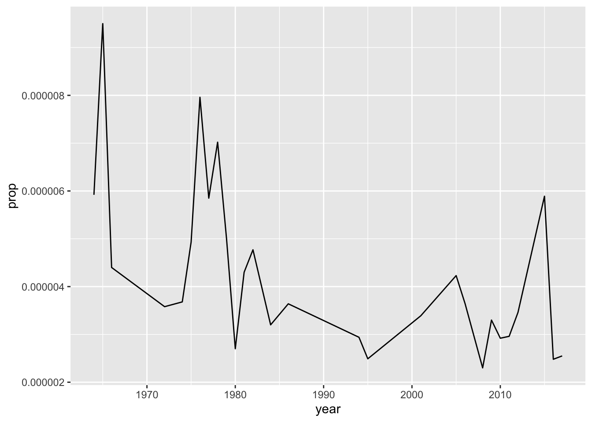
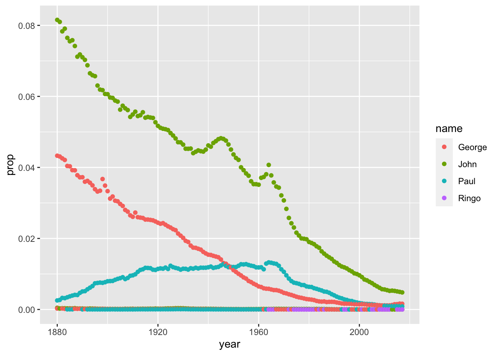
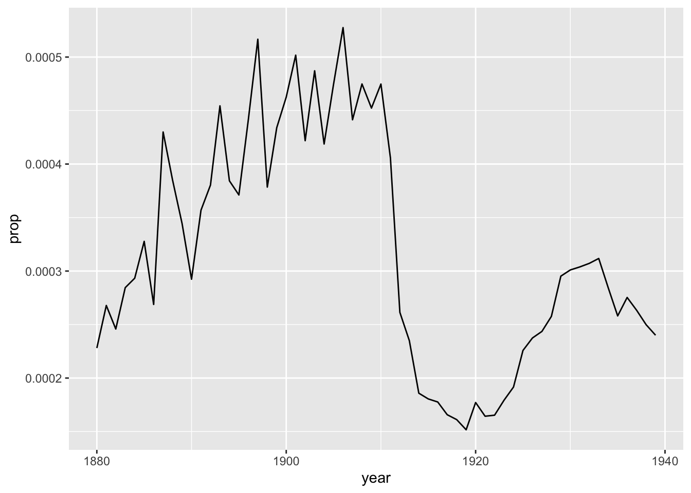

Chapter 1 Intro to Programming in R
1.1 Creating a New Project in R Studio
I recommend you start by creating a new project for this intro chapter.
Choose ‘File’ -> ‘New Project…’ In the popup that follows, choose ‘New Directory,’ then ‘New Project,’ and choose (or create) a location for your project folder. You can leave all the other options as-is. Your popup should look something like this:

Once you’ve created a project, choose ‘File’ -> ‘New File’ -> ‘R Script.’ This will open up the Source pane and create a new, blank file. Let’s save it: ‘File’ -> ‘Save’ - and it will automatically save in our project’s folder.
OK, let’s get coding!
1.2 Loading Packages and Data
The U.S. Social Security Administration keeps records on first names at birth, going back to 1890. Data Scientist and R Superstar Hadley Wickham has created an R package that lets us load this data directly into R.
Using a package is a two-step process: first, you install the package onto your computer; secondly, you load the package as a library to access its functions and data in your current work environment.
Put another way, a package needs only be installed once, but has to be loaded into your R environment every time you start up R Studio.
install.packages('babynames')
library(babynames)Where do these packages come from, and who makes them? Why? By default, packages are hosted on an online repository referred to as CRAN; they can also be installed from GitHub. And anyone can make and share an R package, for instance if they solve a complicated workflow and want to share that insight with others to save them time and redundancy. Having R package-based means that users only need to load packages relevant to their area of study - keep in mind R is used for everything from Health Sciences to Comparative Literature.
Let’s take a look at the babynames package, by asking about its structure, and taking a glimpse at it:
str(babynames)## tibble [1,924,665 × 5] (S3: tbl_df/tbl/data.frame)
## $ year: num [1:1924665] 1880 1880 1880 1880 1880 1880 1880 1880 1880 1880 ...
## $ sex : chr [1:1924665] "F" "F" "F" "F" ...
## $ name: chr [1:1924665] "Mary" "Anna" "Emma" "Elizabeth" ...
## $ n : int [1:1924665] 7065 2604 2003 1939 1746 1578 1472 1414 1320 1288 ...
## $ prop: num [1:1924665] 0.0724 0.0267 0.0205 0.0199 0.0179 ...glimpse(babynames)## Rows: 1,924,665
## Columns: 5
## $ year <dbl> 1880, 1880, 1880, 1880, 1880, 1880, 1880, 1880, 1880, 1880, 1880, 1880, 1880, 1880, 1880,…
## $ sex <chr> "F", "F", "F", "F", "F", "F", "F", "F", "F", "F", "F", "F", "F", "F", "F", "F", "F", "F",…
## $ name <chr> "Mary", "Anna", "Emma", "Elizabeth", "Minnie", "Margaret", "Ida", "Alice", "Bertha", "Sar…
## $ n <int> 7065, 2604, 2003, 1939, 1746, 1578, 1472, 1414, 1320, 1288, 1258, 1226, 1156, 1063, 1045,…
## $ prop <dbl> 0.07238359, 0.02667896, 0.02052149, 0.01986579, 0.01788843, 0.01616720, 0.01508119, 0.014…The output of glimpse is a little overwhelming at first, although it makes clear there are a lot of rows in it (Excel cannot handle 1,924,665 rows of data, but this is still not ‘Big Data’).
So let’s try head and tail to see the first and last 10 rows of the dataset:
head(babynames, n=10)## # A tibble: 10 × 5
## year sex name n prop
## <dbl> <chr> <chr> <int> <dbl>
## 1 1880 F Mary 7065 0.0724
## 2 1880 F Anna 2604 0.0267
## 3 1880 F Emma 2003 0.0205
## 4 1880 F Elizabeth 1939 0.0199
## 5 1880 F Minnie 1746 0.0179
## 6 1880 F Margaret 1578 0.0162
## 7 1880 F Ida 1472 0.0151
## 8 1880 F Alice 1414 0.0145
## 9 1880 F Bertha 1320 0.0135
## 10 1880 F Sarah 1288 0.0132tail(babynames, n=10)## # A tibble: 10 × 5
## year sex name n prop
## <dbl> <chr> <chr> <int> <dbl>
## 1 2017 M Zubeyr 5 0.00000255
## 2 2017 M Zy 5 0.00000255
## 3 2017 M Zyel 5 0.00000255
## 4 2017 M Zyheem 5 0.00000255
## 5 2017 M Zyhier 5 0.00000255
## 6 2017 M Zykai 5 0.00000255
## 7 2017 M Zykeem 5 0.00000255
## 8 2017 M Zylin 5 0.00000255
## 9 2017 M Zylis 5 0.00000255
## 10 2017 M Zyrie 5 0.00000255Everything we’ve done up to this point has been in Base R, that is, R without any functions added via packages. Throughout this book, we’ll be relying on a collection of inter-connected packages called the Tidyverse, which drastically simplifies performing varying calculations on data.
Like all packages, we first have to install and then load it.
• Please note: when you install the ‘tidyverse’ package, you’ll get a prompt inside your R Console at the bottom-left, asking you a Yes/No question. You cannot proceed until you click your cursor in the Console and type out the word ‘Yes.’ Note that the Console may be cut off or obfuscated; you may need to adjust your R Studio windows to see it better.
install.packages('tidyverse')
library(tidyverse)Loading the Tidyverse shows the eight packages that make it up, as well as a few warnings that we can disregard. We’ll begin on focusing on three packages that will help us work with babynames: dplyr, ggplot2 and stringr. All three are loaded once we run the library(tidyverse) command. The first, dplyr, we use to manipulate data: to filter it, rearrange it,count it, do calculations for custom columns, and pivot the data to our liking.
1.3 %>%
The greatest and most powerful functionality added to R via the Tidyverse, in my opinion, is the ‘pipe operator:’
%>%
…which allows us to chain commands to each other. It can be tricky to type; the shortcut is Shift-Command-M (on a PC, it’d be Shift-Control-M).
Another useful logical operator for this dataset is the ‘includes’ operator, which looks like this: %in% .
I think an example will make the best sense of how to use these operators, so let’s get started with filtering.
1.4 Filtering Data
If we just type ‘babynames’ in R, we’ll see the first 10 rows of data, organized by year, and an indication that there are nearly 2 million more rows remaining. That’s way too much to visualize! Let’s start by filtering for specific names: I’ll use the names of The Beatles as a starting point.
babynames %>%
filter(name %in% 'Ringo')## # A tibble: 28 × 5
## year sex name n prop
## <dbl> <chr> <chr> <int> <dbl>
## 1 1964 M Ringo 12 0.00000592
## 2 1965 M Ringo 18 0.0000095
## 3 1966 M Ringo 8 0.0000044
## 4 1972 M Ringo 6 0.00000358
## 5 1974 M Ringo 6 0.00000368
## 6 1975 M Ringo 8 0.00000493
## 7 1976 M Ringo 13 0.00000796
## 8 1977 M Ringo 10 0.00000585
## 9 1978 M Ringo 12 0.00000702
## 10 1979 M Ringo 9 0.00000502
## # … with 18 more rowsThat ‘translates’ to ‘take the babynames dataset and filter it so only values in the name column that match ’Ringo’ are included.’ The and is the pipe operator ( %>% ), and the match is the %in% operator.
If we wanted to look for more than one name, we’d change the syntax to use a ‘combine’ command ( c ), with the values comma-separated. Let’s try that with babynames and the Beatles.
babynames %>%
filter(name %in% c('Ringo', 'Paul', 'George', 'John')) ## # A tibble: 831 × 5
## year sex name n prop
## <dbl> <chr> <chr> <int> <dbl>
## 1 1880 F John 46 0.000471
## 2 1880 F George 26 0.000266
## 3 1880 M John 9655 0.0815
## 4 1880 M George 5126 0.0433
## 5 1880 M Paul 301 0.00254
## 6 1881 F George 30 0.000303
## 7 1881 F John 26 0.000263
## 8 1881 M John 8769 0.0810
## 9 1881 M George 4664 0.0431
## 10 1881 M Paul 291 0.00269
## # … with 821 more rowsNow we get a ton of results - far too many to show on the screen.
1.5 Visualizing
That’s where data visualization comes in: it’s often impossible to even see your results from big data without plotting it into a visual, summarized form. Our visualization package is called ggplot2, and it’s amazingly straightforward to use, once you get used to its syntax:
ggplot(data, aes(x,y)) + geometry()
Huh?
Well, our function (think: verb) is ‘ggplot().’ Inside that, we define our ‘aesthetics’ (aes) for the visualization, which has its own set of parentheses. Inside the aesthetics, we define the columns we want to use for the x and y axes, and finally we define the type of geomtry our visualization will use, such as a bar chart ( geom_col() ), scatterplot ( geom_point() ), or line chart ( geom_line() ), for instance.
Like most things in R and the Tidyverse, it’s easier to make sense of ggplot() through examples:
babynames %>%
filter(name %in% 'Ringo') %>%
ggplot(aes(year, prop)) + geom_line()
To review, we take ‘babynames,’ and filter so the name includes ‘Ringo;’ We then plot by setting the aesthetics to use the ‘year’ and ‘prop’ columns of our dataset; our plot will be a line chart.
Learning by example often raises as many questions as it answers, so I’ll try to address those as we go along.
Let’s take this one step further:
babynames %>%
filter(name %in% c('Ringo', 'John', 'George', 'Paul')) %>%
ggplot(aes(year, prop, color = name)) + geom_point()
That looks really weird! Why? In summary, becuase there is a ‘Sex’ column in the data. So, for any year - say, 1974 - there are 4 male Ringo’s, and zero female Ringo’s - ggplot is trying to plot both the 4 and 0 values on the same vertical axis.
Therefore, our solution is to filter out one sex:
babynames %>%
filter(name %in% c('Ringo', 'John', 'George', 'Paul')) %>%
filter(sex %in% "M") %>%
ggplot(aes(year, prop, color = name)) + geom_line()That’s much better - but what happened to Ringo?
The other names are so much more popular that his: he doesn’t show up until 1964, and the proportion of people born per year with that name is very low in comparison to, say, ‘George.’
Let’s try filtering the ‘year’ column in order to have our ggplot ‘zoom in’ on the Ringo section.
babynames %>%
filter(name %in% c('Ringo', 'John', 'George', 'Paul')) %>%
filter(sex %in% "M") %>%
filter(year > 1964) %>%
ggplot(aes(year, prop, color = name)) + geom_line()
This visualization is more limited, but somewhat more equitable - it starts around the time the Beatles became popular, but ignores the previous popularity of some of the names (John, Paul, George).
Another question arises: why are we plotting ‘prop?’ what about ‘n?’
babynames %>%
filter(name %in% c('Ringo', 'John', 'George', 'Paul')) %>%
filter(sex %in% "M") %>%
filter(year > 1964) %>%
ggplot(aes(year, n, color = name)) + geom_line()
The results are very similar for ‘n’ as they were for ‘prop.’ Let’s take an example name where that’s not the case:
babynames %>%
filter(name %in% "Mary") %>%
filter(sex %in% "M") %>%
filter(year < '1940') %>%
ggplot(aes(year, prop)) + geom_line()
babynames %>%
filter(name %in% "Mary") %>%
filter(sex %in% "M") %>%
filter(year < '1940') %>%
ggplot(aes(year, n)) + geom_line()
# you can also try 'Joseph' and 'M'
Note that n is a simple count of names per year, whereas prop is a calculation: total number of people given that number in a given year, divided by the total number of births. So when there are fewer names in the database, the difference between n and prop is more obvious. That’d be in the early years of the babynames dataset, when biblical names like Mary and Joseph were much more common relative to all of the names. Since then, there are just more names, meaning the prop of the most common names of long ago have nearly all gone down in prop - even if their n value is increasing.
# note that we have not learned how to do this yet:
babynames %>%
group_by(year) %>%
summarize(total = n_distinct(name)) %>%
ggplot(aes(year, total)) + geom_line() +
xlab('Year') + ylab('Count of Unique Names')Now that we have all of this information, we can try to answer specific questions. Let’s start with some basic ones - try to answer them on your own if you can.
-
What was the most popular name in the first year of the database, 1890?
babynames %>% filter(year == "1890")## # A tibble: 2,695 × 5 ## year sex name n prop ## <dbl> <chr> <chr> <int> <dbl> ## 1 1890 F Mary 12078 0.0599 ## 2 1890 F Anna 5233 0.0259 ## 3 1890 F Elizabeth 3112 0.0154 ## 4 1890 F Margaret 3100 0.0154 ## 5 1890 F Emma 2980 0.0148 ## 6 1890 F Florence 2744 0.0136 ## 7 1890 F Ethel 2718 0.0135 ## 8 1890 F Minnie 2650 0.0131 ## 9 1890 F Clara 2496 0.0124 ## 10 1890 F Bertha 2388 0.0118 ## # … with 2,685 more rowsBut then what? Any why two ‘=’ symbols?
1.6 Syntax
Let’s start with ‘=.’ In R, you can create variables, and one way to do this is with a single ‘=’ symbol:
x = 10In the case of babynames, we’re not aiming to create a variable - we just want to limit the data to only include entries in the year 1890 - so we need to use two ‘=’ symbols to differentiate from making a variable. Two ‘=’ symbols tests to see if values are equal.
Also, in this textbook we will be using the arrow function to create variables, because it works in two directions:
x <- 10
10 -> xWay more useful than ‘=.’
So, to review, we’ll use the arrow -> operator in lieu of the ‘=’ symbol, but we’ll still use ‘==’ in order to filter our data based on specific conditions, like the year equals 1890.
1.7 Creating Variables
Let’s take the entire babynames dataset and create a sub-set of the data that only incudes entries from the year 1890, using a variable:
babynames %>%
filter(year == "1890") -> babynames_1890Note that all of our variables, or columns, are lowercase - everything is, except the babynames themselves. R will not detect your mistake if you lowercase a name or Uppercase a Column.
Now we have a variable equal to a subset of our data, and we can see its contents by typing its name: babynames_1890.
That makes things much easier, if that’s the only year we want to look at - but we’ll have to plot our graphs differently.
1.8 Modifying Data
Let’s begin with the arrange() function, which does as it sounds - we’ll tell it to arrange in descending order of prop:
babynames_1890 %>%
arrange(desc(prop)) ## # A tibble: 2,695 × 5
## year sex name n prop
## <dbl> <chr> <chr> <int> <dbl>
## 1 1890 M John 8502 0.0710
## 2 1890 M William 7494 0.0626
## 3 1890 F Mary 12078 0.0599
## 4 1890 M James 5097 0.0426
## 5 1890 M George 4458 0.0372
## 6 1890 M Charles 4061 0.0339
## 7 1890 F Anna 5233 0.0259
## 8 1890 M Frank 3078 0.0257
## 9 1890 M Joseph 2670 0.0223
## 10 1890 M Robert 2541 0.0212
## # … with 2,685 more rowsSo, what was the answer to our question? Well, ‘John’ has the highest proportion, but Mary has the highest count.
Why does Mary have a higher ‘n’ value, but a lower proportion - in the same year? Because ‘prop’ also takes sex into account, i.e. it counts the proportion of each sex in each year that receives a given name.
Let’s account for this somewhat confusing aspect to our data by splitting it up along the variable that is giving us a hard time: sex.
But sex is the least of our problems, as we’ll see.
1.9 Count
Let’s try by using a new function, count(), which does exactly what it sounds like. We can specify to sort the results; for some archaic reason, we have to write the words ‘true’ and ‘false’ in ALL CAPS:
babynames_1890 %>%
count(sex, sort = TRUE)## # A tibble: 2 × 2
## sex n
## <chr> <int>
## 1 F 1534
## 2 M 1161That’s not very many names - less than 3,000 unique names in the U.S. in 1890. It’s also notable there are more female names than male - not more women, just more variety in the names for females births.
count() can be helpful, but note that it strips away all of the columns except the one we counted - and adds an ‘n’ column. But that’s it - prop, count, name, year - all gone. More on count(later).
Let’s plot the most popular names of 1890 - but first, we have to cut them off, as 2,695 names is too many to plot:
babynames_1890 %>%
arrange(desc(prop)) %>%
head(10)## # A tibble: 10 × 5
## year sex name n prop
## <dbl> <chr> <chr> <int> <dbl>
## 1 1890 M John 8502 0.0710
## 2 1890 M William 7494 0.0626
## 3 1890 F Mary 12078 0.0599
## 4 1890 M James 5097 0.0426
## 5 1890 M George 4458 0.0372
## 6 1890 M Charles 4061 0.0339
## 7 1890 F Anna 5233 0.0259
## 8 1890 M Frank 3078 0.0257
## 9 1890 M Joseph 2670 0.0223
## 10 1890 M Robert 2541 0.0212We can plot ten names, easy:
babynames_1890 %>%
arrange(desc(prop)) %>%
head(10) %>%
ggplot(aes(name, prop)) + geom_col()As a reminder, in ggplot() we define our aesthetics by specifying which columns will create the x- and y-axes. We then indicate the type of graph we want to make - in this case a column chart.
Why not a line chart like before? Because line charts only work with continous variables, like year. In this case, we are only plotting the data from one year, so year is no longer something we can plot. We are plotting name and prop, which are discrete variables.
What’s the difference? To oversimplify, discrete variables can be counted - how many Steve’s show up in babynames, for instance - and continuous variables are measured, like years, as well as temperature, wind speed, etc.
So what is prop? Prop is a calculated variable, in that it’s the result of an equation: the total number of births of a particular gender in a specific year, divided by the total number of instances of a particular name. In other words, we’re counting things. So it’s a discrete variable.
We would make a line chart [ geom_line() ] when using a continuous variable, like year, as we did with the Beatles. In this case, plotting name and prop will make the most sense in a column chart (we usually call these bar charts, but ggplot’s bar charts are a little trickier to plot than column charts, and we’re aiming for easiness right now).
Looking back at our chart’s results, I would prefer the results in order or prop. Why didn’t arrange(desc(prop)) do that for us? Well, long story, but basically, regardless of how you reshape your data, ggplot() is going to need its own set of instructions for how to visualize it in a particular order.
So arrange() doesn’t work - we have to make the adjustment inside the ggplot() call:
babynames_1890 %>%
arrange(desc(prop)) %>%
head(10) %>%
ggplot(aes(reorder(name, prop), prop)) + geom_col()OK, that got pretty complicated. Three nested parentheses? Let’s look at the offending line: originally, the ‘aesthetics’ of our ggplot() were:
aes(name, prop)
And we want to reorder the ‘names,’ based on ‘prop:’
reorder(name, prop)
In other words, italics ‘I want to reorder the names based on their proportion.’
Let’s put it back together:
aes(reorder(name, prop), prop))
And to see it in action:
babynames_1890 %>%
head(10) %>%
ggplot(aes(reorder(name, prop), prop)) + geom_col()-
OK, but why is it in the wrong order?
We just have to ‘tell’ ggplot() to reverse, or do the opposite of, the order it chose. We can use the minus sign for this:
babynames_1890 %>%
head(10) %>%
ggplot(aes(reorder(name, -prop), prop)) + geom_col()1.10 More Aesthetics
Let’s add some color:
babynames_1890 %>%
arrange(desc(prop)) %>%
head(10) %>%
ggplot(aes(reorder(name, -prop), prop, color = "red")) + geom_col()That didn’t work the way it did for The Beatles!
Of course, that was a line graph - geom_line() - and that line has a color. This time, ‘color’ is read as stroke or outline; fill controls our columns. Also, we need to move the fill command to inside the geometry:
babynames_1890 %>%
arrange(desc(prop)) %>%
head(10) %>%
ggplot(aes(reorder(name, -prop), prop)) + geom_col(fill = "blue")Great. Now let’s make the fill based on the value of a column:
babynames_1890 %>%
arrange(desc(prop)) %>%
head(10) %>%
ggplot(aes(reorder(name, -prop), prop, fill = name)) + geom_col()OK, great. The names are all different colors because they are discrete data points, i.e. they are not measured - like ‘prop:’ We did this by setting our fill color to a variable - in this case, name.
Since ‘prop’ is measured, or discrete, it is visualized as a range of a single color.
This would all look better sideways:
babynames_1890 %>%
arrange(desc(prop)) %>%
head(10) %>%
ggplot(aes(reorder(name, prop), prop, fill = prop)) + geom_col() + coord_flip()That last line, connected to the geometry with a ‘+’ symbol, tells ggplot to flip the coordinates of our plot 90 degrees.
By the way, we could ‘show’ the anomaly about John and Mary having confusing ‘n’ and ‘prop’ values by adjusting our aesthetics - let’s use fill:
babynames_1890 %>%
arrange(desc(prop)) %>%
head(10) %>%
ggplot(aes(reorder(name, prop), prop, fill = n)) + geom_col() + coord_flip()We’d mentioned earlier that the ‘sex’ column is complicating our use of ‘prop’ over ‘n.’ To account for this problem, we could color by sex:
babynames_1890 %>%
arrange(desc(prop)) %>%
head(10) %>%
ggplot(aes(reorder(name, prop), prop, fill = sex)) + geom_col() + coord_flip()One more ggplot() trick to change the way we visualize our data: making multiple graphs, based on a variable:
babynames_1890 %>%
arrange(desc(prop)) %>%
head(10) %>%
ggplot(aes(reorder(name, prop), prop, fill = sex)) +
geom_col() +
coord_flip() +
facet_wrap(~sex)What facet_wrap is trying to do is create multiple graphs based on one variable - in this case, Sex.
That looks…. terrible. Why? The function facet_wrap() is trying to use the same values, and the same scale, for each of the two graphs. Let’s ‘free’ the y-axis to account for this discrepancy:
babynames_1890 %>%
arrange(desc(prop)) %>%
head(10) %>%
ggplot(aes(reorder(name, prop), prop, fill = sex)) +
geom_col() +
coord_flip() +
facet_wrap(~sex, scales = "free_y")Wow, that really changes things - weren’t there more female than male names, when we used count() earlier? Sure, but while there may be more variance in female names in 1890, females only have two of the most common names.
1.11 Review
OK, so now we can answer some other direct questions:
-
What were the most popular names in 2017, the most recent year of the database?< /li>
How would we answer this? I find it’s easiest to write our the process in English, then translate it to R and the Tidyverse:
‘Take babynames and filter it to only include entries from 2017. Then arrange the remaining entries in descending order of proportion.’
In the Tidyverse:
babynames %>%
filter(year == 2017) %>%
arrange(desc(prop))## # A tibble: 32,469 × 5
## year sex name n prop
## <dbl> <chr> <chr> <int> <dbl>
## 1 2017 F Emma 19738 0.0105
## 2 2017 F Olivia 18632 0.00994
## 3 2017 M Liam 18728 0.00954
## 4 2017 M Noah 18326 0.00933
## 5 2017 F Ava 15902 0.00848
## 6 2017 F Isabella 15100 0.00805
## 7 2017 F Sophia 14831 0.00791
## 8 2017 M William 14904 0.00759
## 9 2017 M James 14232 0.00725
## 10 2017 F Mia 13437 0.00717
## # … with 32,459 more rowsIt looks like nearly 1% of American girls in 2017 were named ‘Emma.’ Olivia, Liam and Noah are also overwhelmingly popular.
What about my name? My birth year? Just replace my values with yours:
babynames %>%
filter(name %in% c("Brian", "Bryan")) %>%
filter(sex == "M") %>%
ggplot(aes(year, prop, color = name)) +
geom_line()babynames %>%
filter(year == 1975) %>%
arrange(desc(prop)) %>%
head(10) %>%
ggplot(aes(reorder(name, prop),prop, fill = sex)) +
geom_col() +
coord_flip()
I made the Top 10!
(It’s all been downhill since then)
Some reminders:
- We leave quotes off of the year, as it is numeric - only strings, or characters, get quotes.
- We make sure to reorder the data (based on popularity, or ‘prop’) before limiting it to the top 10 results. Otherwise, it could be organized alphabetically or something - and we’d be getting 10 names, but not the 10 most popular names.
- We have to reorder our name variable in the ggplot() to go in order of prop - even though we just reorganized the data this way 2 steps ago, ggplot() uses its own internal logic to organize the data.
- We have to plot as a bar chart, or column chart.
Why?
Because line charts are for continuous variables, like year - not discrete ones, like ‘name.’ If you can measure it, it’s continuous. If you can count it, it’s discrete.